UT 2 - Python, instalación e IDE

Resultados de aprendizaje y criterios de evaluacion que se evaluarán en esta unidad.
| Resultados de aprendizaje de la unidad didáctica: |
|---|
| RA. 1: Reconoce la estructura de un programa informático, identificando y relacionando los elementos propios del lenguaje de programación utilizado. |
| Criterios de evaluación de la unidad didáctica: |
|---|
| b) Se han respetado las especificaciones técnicas del proceso de instalación. |
| c) Se han utilizado entornos integrados de desarrollo. |
1 - Python
- Python es un lenguaje de programación interpretado cuya filosofía hace hincapié en una sintaxis muy limpia y un código facilmente legible.
- Ideado por Guido van Rossum, empezó su desarrollo en 1989.
- Es un lenguaje de alto nivel con una gramática sencilla, clara y muy legible.
- Es dinámicamente tipado: Es decir, el tipo de las variables se decide en tiempo de ejecución.
- Es fuertemente tipado: No se puede usar una variable en un contexto fuera de su tipo. Si se quisiera, habría que hacer una conversión de tipos.
- Es un lenguaje multiparadigma: soporta la orientación a objetos, la programación estructurada y la programación funcional.
- Open Source, de código abierto y gratuito.
- Relativamente fácil de aprender.
- Presenta numerosas librerías que lo convierten en un firme candidato para la programación de IA, ciencia de datos, desarrollo web y mucho más.
- Interpretado, aunque el código fuente se compila primero a bytecode que ejecuta la máquina virtual de Python.
- Lenguaje “todo terreno”: sirve tanto para aplicaciones de escritorio, programación en entorno servidor, desarrollo web, automatización, etc.
- Multiplataforma: se pueden desarrollar programas en Mac, Windows, Linux y otros sistemas operativos.
2 - Lenguajes de programación interpretados y compilados
-
Lenguaje de programación interpretado: el código se ejecuta línea por línea por un intérprete, sin necesidad de compilarse previamente en un archivo ejecutable. Ejemplo: Python, JavaScript.
-
Lenguaje de programación compilado: el código se traduce completo (compila) a código máquina antes de ejecutarse, generando un archivo ejecutable. Ejemplo: C, C++.
-
Tabla resumen.
Tipo de lenguaje Ventajas Desventajas Ejemplos Interpretado - Fácil de probar y depurar (se ejecuta línea por línea).
- Más flexible y portable entre sistemas.- Más lento porque interpreta el código en tiempo de ejecución.
- Depende de tener instalado el intérprete.Python, JavaScript, PHP Compilado - Muy rápido al ejecutarse (ya está en código máquina).
- Mejor optimización y uso de recursos.- El proceso de compilación lleva tiempo.
- Menos portable: hay que compilar para cada sistema.C, C++, Rust, Go
Nota: Java es un lenguaje compilado e interpretado al mismo tiempo.
3 - Python frente a otros lenguajes de programación, índice TIOBE
- El índice de programación TIOBE es un indicador de la popularidad de las lenguas de programación.
- El índice se actualiza una vez al mes. Las calificaciones se basan en el número de ingenieros cualificados en todo el mundo, cursos y proveedores de terceros. Los sitios web populares Google, Amazon, Wikipedia, Bing y más de otros 20 se utilizan para calcular las calificaciones.
- El índice TIOBE no trata de decidir del mejor lenguaje de programación o del lenguaje en el que se han escrito la mayoría de las líneas de código, sino de su popularidad en un momento dado.
- El índice se puede (debe) utilizar para comprobar si nuestras habilidades de programación están actualizadas o para tomar una decisión estratégica sobre qué lenguaje de programación debe ser adoptado cuando se comience a construir un nuevo sistema de software.
La definición del índice TIOBE se puede encontrar aquí.
3.1 - Popularidad de Python según TIOBE
En el periodo 08/24-08/25, podemos ver el incremento significativo de la popularidad del lenguaje de programación Python.
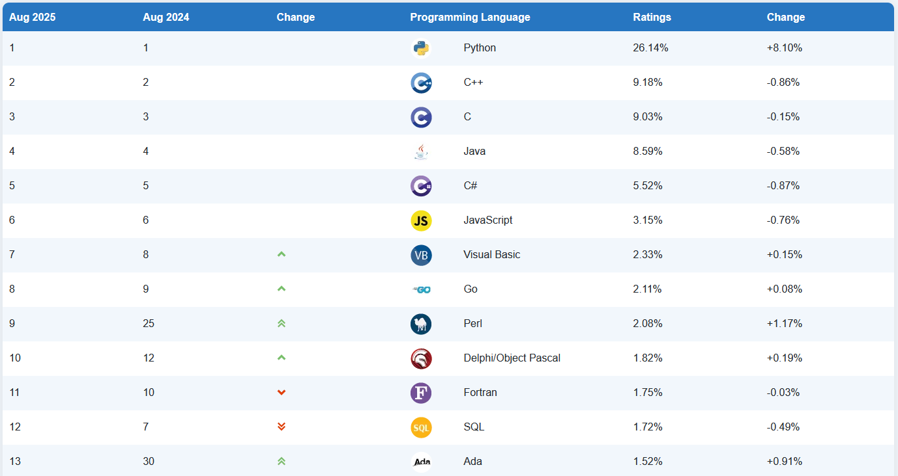
3.2 - Índice TIOBE
Con la figura de aquí abajo podemos ver las popularidades sobre un periodo de tiempo más extenso.
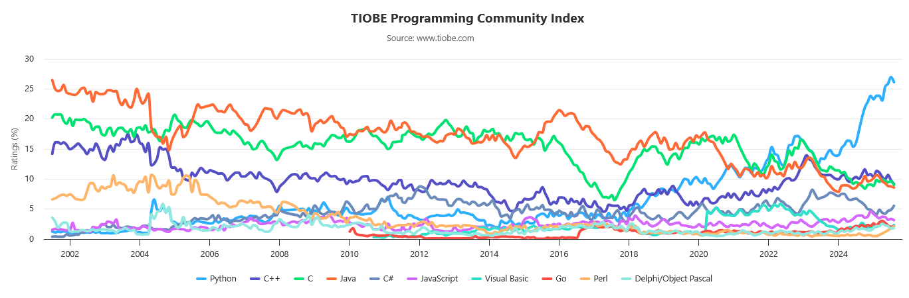
4 - Entorno de Desarrollo Integrado
Un IDE (Integrated Development Environment o Entorno de Desarrollo Integrado) es un programa que reúne en una sola aplicación todas las herramientas necesarias para desarrollar software.
📌 Sus componentes principales suelen ser:
- Editor de código: para escribir el programa con resaltado de sintaxis y ayudas.
- Compilador o intérprete: para traducir el código fuente a un lenguaje que el ordenador pueda ejecutar.
- Depurador (debugger): para detectar y corregir errores durante la ejecución.
- Gestión de proyectos: organiza archivos, dependencias y librerías.
- Autocompletado y sugerencias: acelera la escritura de código.
4.1 - IDE en línea
Un IDE en línea (Entorno de Desarrollo Integrado en la nube) es una plataforma accesible desde un navegador web que permite a los programadores escribir, ejecutar, depurar y colaborar en proyectos de software sin necesidad de instalar herramientas pesadas en el ordenador local.
🔧 Ejemplos de IDE en línea:
- Replit → Muy usado en educación y proyectos colaborativos, soporta muchos lenguajes, permite ejecución inmediata y tiene integración con bases de datos.
- GitHub Codespaces → Entorno de desarrollo basado en Visual Studio Code pero en la nube, directamente desde los repositorios de GitHub.
- Codeanywhere → Ofrece entornos Docker personalizables y colaboración en tiempo real.
- AWS Cloud9 → IDE en línea de Amazon, con integración nativa con todos los servicios de AWS.
- Glitch → Enfocado en aplicaciones web, con despliegue automático al guardar cambios.
4.2 - Jupyter Notebook y Google Colab
4.2.1 - Jupyter Notebook / JupyterLab
Es un entorno interactivo basado en celdas que permite escribir código, texto en Markdown, gráficos, fórmulas matemáticas (LaTeX) y ejecutar el código paso a paso.
Aunque nació como una herramienta de investigación y enseñanza en ciencia de datos, se ha convertido en un estándar de facto en el mundo de Python.
Se puede usar localmente (instalando Jupyter en tu PC) o en la nube (ej. Binder, JupyterHub).
4.2.2 - Google Colab
Es básicamente un Jupyter Notebook en la nube, mantenido por Google.
Permite ejecutar código Python directamente en servidores remotos de Google (gratis o bajo suscripción).
Se usa mucho en machine learning, análisis de datos y enseñanza de programación en Python.
4.3 - IDE locales
A diferencia de los IDE en la nube, estos utilizan los recursos de la máquina local (CPU, RAM, disco duro, tarjeta gráfica, etc.) para ejecutar, compilar, depurar y probar los programas.
🔧 Ejemplos de IDE muy usados:
- Visual Studio Code (será el que usaremos).
- Eclipse (muy usado en Java).
- IntelliJ IDEA.
- PyCharm (para Python).
- NetBeans.
4.4 - Visual Studio Code (VSC) como herramienta principal en el curso.
Durante el curso utilizaremos Visual Studio Code, que no es un IDE en el sentido más “pesado” como Eclipse o IntelliJ, sino un editor de código avanzado que, mediante extensiones, se convierte en un IDE completo.
🎯 ¿Por qué VSC?
- Multiplataforma → Funciona en Windows, Linux y macOS.
- Es gratuito y de código abierto.
- Es fácil de instalar y configurar.
- Se adapta tanto a estudiantes como a programadores avanzados.
- Permite trabajar en múltiples lenguajes.
- Dispone de una comunidad muy importante lo que permite disponer de infinidad de extensiones (jupyter).
5 - Instalación de VSC
- Seguir el siguiente enlace y descargar el instalador.
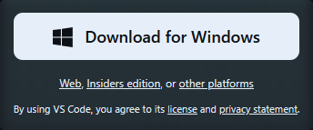
- Hacer doble clic sobre el archivo, no cambiar nada de todas las opciones seleccionadas y seguir las instrucciones.
- Lanzar VSC. Si la instalación se ha hecho correctamente, debería aparecer una interfaz similar a la de la siguiente imagen.
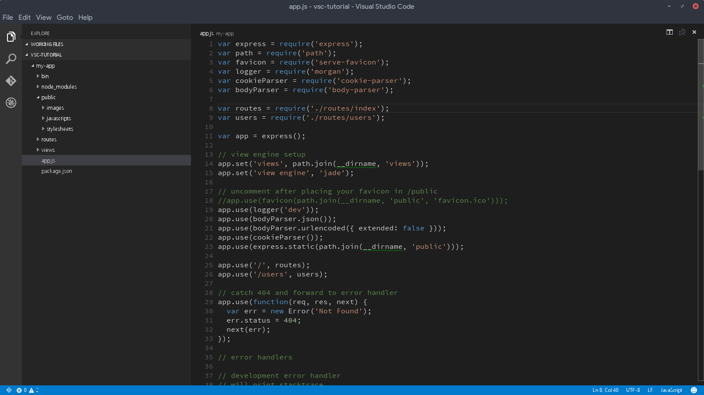
6 - Instalación de Python
-
Seguir el siguiente enlace y descargar el instalador.
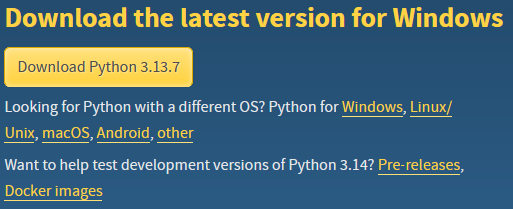
-
Hacer doble clic sobre el instalador, ticar la opción Add python.exe to PATH y pulsar Install Now.
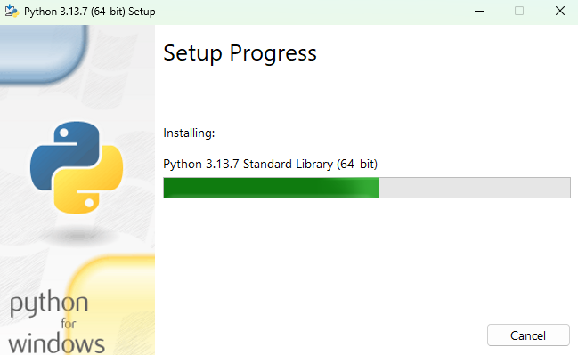
-
Dejar que la instalación se complete.

-
Por último seleccionar la opción Disable path Lenght limit.
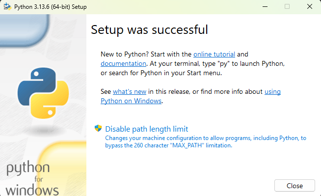
-
Para comprobar que la instalación se ha realizado correctamente, abrir una terminal de VSC y escribir el siguiente comando:
Este comando pide al sistema que le devuelva la versión de python instalada.
De haberse instalado correctamente el resultado será similar al de la siguiente imagen.
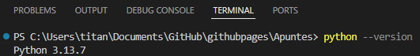
7 - Primer programa en Python
Vamos a escribir nuestro primer programa Python que muestre un saludo por pantalla. Para ello creamos un archivo fuente Python llamado, HolaMundo.py en la carpeta donde queramos trabajar, y lo guardamos con este contenido:
Nota: Es probable que al crear el archivo VSC detecte la necesidad de instalar alguna extensión para Python:
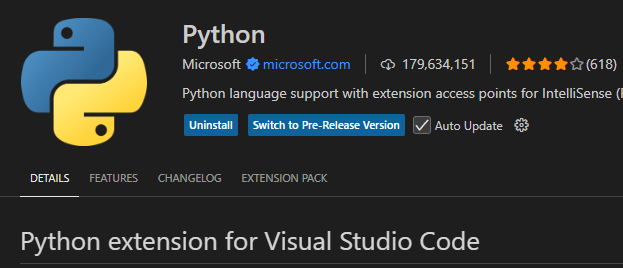
Para ejecutar el programa, simplemente pulsaremos el boton de play.
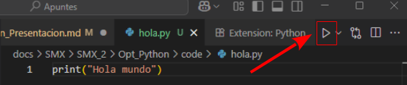
El resultado de la ejecución tendrá el siguiente resultado.
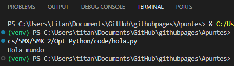
Ya estamos listos para aprender el lenguaje de programación Python.